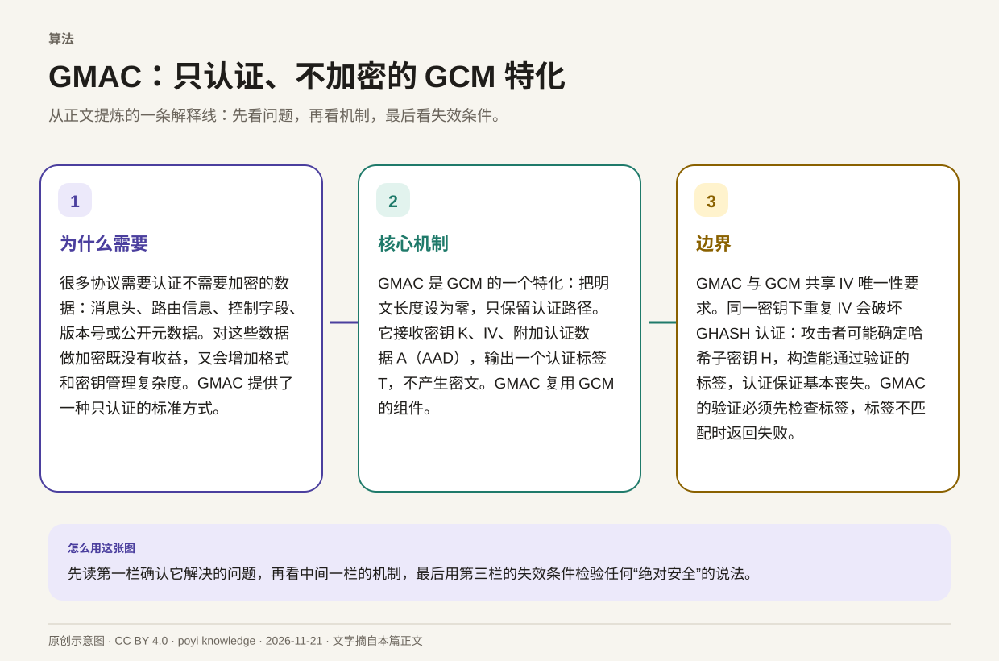
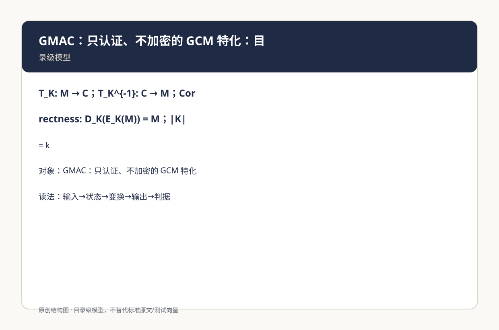

原理与机制
算法：GMAC 认证模式（GMAC）。GMAC 是 GCM 的一个特化：把明文长度设为零，只保留认证路径。它接收密钥 K、IV、附加认证数据 A（AAD），输出一个认证标签 T，不产生密文。GMAC 复用 GCM 的组件。先计算哈希子密钥 H = E_K(0^128)，再按 IV 长度构造预备计数器块 J0：
若 len(IV) = 96 位：J0 = IV || 0^31 || 1
否则：J0 = GHASH_H(IV || 0^(s+64) || [len(IV)]_64)
认证计算对 AAD 求 GHASH，密文长度为零：
S = GHASH_H(A || 0^v || [len(A)]_64 || [0]_64)
T = MSB_t(GCTR_K(J0, S))
其中 v 是把 AAD 补到 128 位整数倍所需的零位数，t 是标签长度。GMAC 可以使用的标签长度与 GCM 相同：128、120、112、104、96 位，64 位和 32 位只在受限应用中使用。GMAC 不产生密文，因此不提供机密性；它只回答这段 AAD 是否由持有密钥的一方认证过。AAD 的典型内容是消息头、地址、序列号、版本或路由信息。GMAC 只使用分组密码的正向 E_K。它与 GCM 共享 nonce 唯一性要求和数据上限：AAD 不超过 2^64-1 位，IV 长度在 1 到 2^64-1 位之间；除只使用确定性 96 位 IV 外，同一密钥的总调用次数不得超过 2^32。

为什么重要
很多协议需要认证不需要加密的数据：消息头、路由信息、控制字段、版本号或公开元数据。对这些数据做加密既没有收益，又会增加格式和密钥管理复杂度。GMAC 提供了一种只认证的标准方式。GMAC 也是理解 AEAD 分解的好例子：GCM = CTR 加密 + GHASH 认证，GMAC = 去掉 CTR 加密、只保留 GHASH 认证。两者共享 H、J0、AAD 编码和 nonce 纪律，因此 GCM 的 nonce 重用风险在 GMAC 中同样存在。但 GMAC 不是通用哈希，也不是数字签名。它是对称密钥的 MAC，验证者必须持有同一密钥；它不能提供不可否认性，也不能替代公钥签名。
应用与实例
GMAC 适合只需要认证的公开数据：协议头、路由字段、版本号、序列号或其他不加密的元数据。SP 800-38D 面向联邦机构和非政府组织的敏感信息保护，GMAC 是 GCM 的认证特化。在协议设计中，GMAC 可以和加密分开使用：加密部分保护机密性，GMAC 保护不加密的元数据；两者必须使用不同的密钥或明确的密钥分离，不能把同一密钥随意复用到不同用途。GMAC 不提供机密性。把 GMAC 当成加密使用，会直接泄露全部输入；把 GMAC 标签当成签名使用，会错误地假设不可否认性。

边界与攻击面
GMAC 与 GCM 共享 IV 唯一性要求。同一密钥下重复 IV 会破坏 GHASH 认证：攻击者可能确定哈希子密钥 H，构造能通过验证的标签，认证保证基本丧失。### 标签必须验证
GMAC 的验证必须先检查标签，标签不匹配时返回失败。把 GMAC 当成校验和或忽略标签，等于没有认证。### 短标签与长 AAD
GMAC 的伪造概率与 AAD 块数和标签长度有关。标准附录指出，针对性伪造概率约为 n/2^t，其中 n 是 AAD 与密文的总块数；GMAC 没有密文，n 主要由 AAD 决定。短标签不适合长 AAD 或高价值场景。### 只认证、不加密
GMAC 不隐藏 AAD 的内容。任何放在 AAD 里的字段都是公开的；需要保密的数据必须另行加密，不能因为已经认证就把它当成机密。### AAD 与调用上限
GMAC 的 AAD 上限是 2^64-1 位，IV 长度和调用次数上限与 GCM 相同。协议必须在密钥生命周期内执行这些限制，不能把只认证误解为没有资源边界。本文教学实现只演示 AES-128-GMAC 的官方向量、AAD 不匹配和标签截断。它不实现 nonce 分配、跨消息状态、常量时间标签比较、密钥管理、协议状态机或侧信道防护，不能用于生产环境。
历史与背景
2007 年，NIST SP 800-38D 标准化 GCM 和 GMAC。GMAC 被定义为 GCM 的认证特化：当输入只包含 AAD、没有需要加密的明文时，GCM 退化为 GMAC。此后，GMAC 主要作为只认证的构建块出现在需要保护公开元数据的协议和格式中。它也提醒开发者：AEAD 的认证部分可以独立使用，但 nonce 唯一性和标签验证责任不会因为没有加密而消失。这段历史说明，GMAC 不是 GCM 的别名，而是同一个认证机制在明文为空时的特化。理解两者的共享部分和差异，是正确使用 GMAC 的前提。
逐步示例与核验
复算示例
取标准或公开测试向量中的一组参数，按“输入—执行—输出”记录：先写出该条目的形式式 (T=\mathrm{MAC}_K(M))；再按规范顺序执行每一步，最后把输出与独立实现或标准向量逐字节对照。若没有可引用的数值向量，就只记录结构步骤，不伪造输出。
参考出处
- Wikipedia search entry for GMAC 认证模式. https://zh.wikipedia.org/w/index.php?search=GMAC%20%E8%AE%A4%E8%AF%81%E6%A8%A1%E5%BC%8F
- Handbook of Applied Cryptography (Menezes, van Oorschot, Vanstone). https://www.cacr.math.uwaterloo.ca/hac/